West Kalimantan
1,267 ha
0.6669° S, 110.0505° E
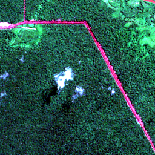
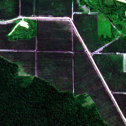
69 frames · 2.56 km squares
In under 8 hours, we autonomously scanned the entire Earth and used Perceptron to find 69 illegal plantations under EU law: forest in 2020, cleared after 31 December 2020.
About 279,000 acres. The loss area listed under each place, added up.
Only if every hectare were palm oil. About 373,000 tonnes at Indonesia’s 2024/25 yield of 3.3 tonnes a hectare, priced at the EU’s 2025 crude palm-oil import average of €1,104 a tonne.
That tonne count is about 22% of the 1.68 million tonnes of crude palm oil the EU imported in 2025, if this oil were turned away at the border.
1,267 ha
0.6669° S, 110.0505° E


1,842 ha
0.8756° N, 112.8191° E
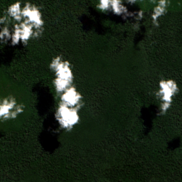
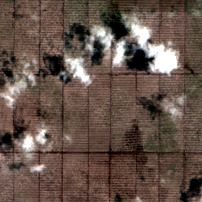
1,042 ha
2.2872° N, 117.8411° E
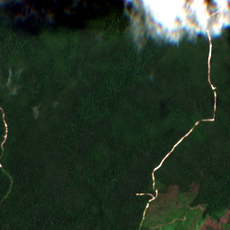
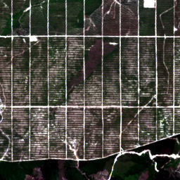
635 ha
3.8875° N, 61.9107° W


594 ha
3.9104° N, 114.2933° E
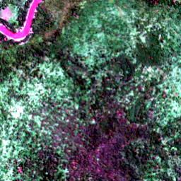
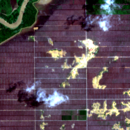
621 ha
8.0275° N, 17.2031° E
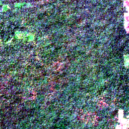
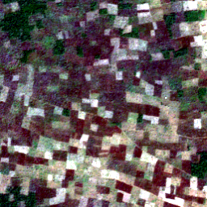
652 ha
8.0704° S, 74.8703° W
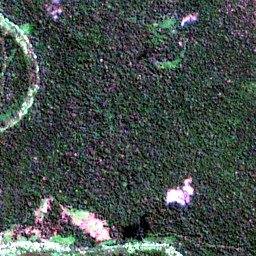
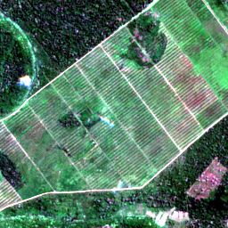
861 ha
8.1403° N, 17.3902° E
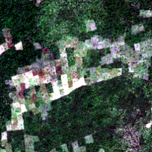
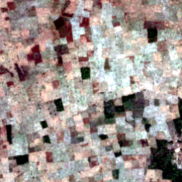
549 ha
8.2281° N, 17.9815° E
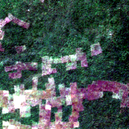
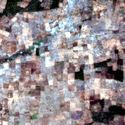
737 ha
8.3184° N, 18.2854° E
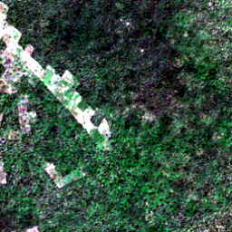
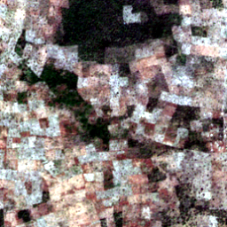
715 ha
8.4289° N, 18.3788° E
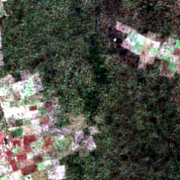
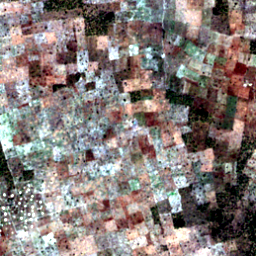
589 ha
8.5699° S, 44.7205° W


3,691 ha
8.6239° N, 62.6484° W


6,338 ha
8.6604° N, 62.5739° W


521 ha
8.7121° N, 62.7354° W


632 ha
8.7840° S, 44.0077° W
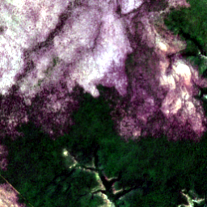
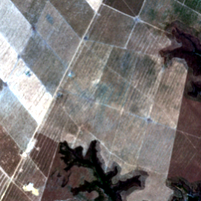
613 ha
9.3858° S, 48.4135° W
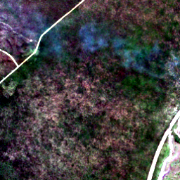
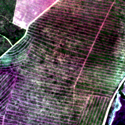
950 ha
10.1770° S, 64.7323° W
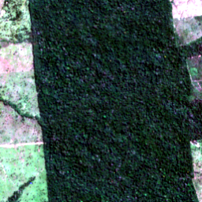
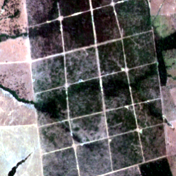
564 ha
10.3919° S, 53.7055° W
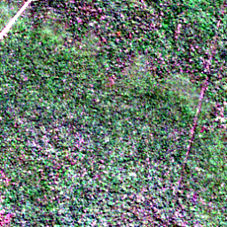
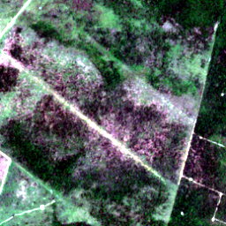
798 ha
10.6262° S, 42.3106° W
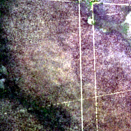
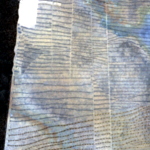
582 ha
10.8354° S, 57.5505° W
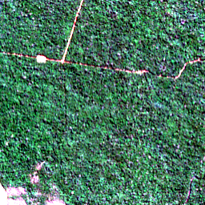
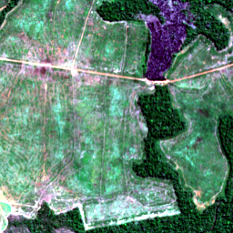
845 ha
10.8774° S, 53.0212° W


532 ha
10.9234° S, 54.0335° W


506 ha
10.9703° S, 53.9930° W


1,314 ha
10.9833° S, 54.1412° W


508 ha
11.4259° S, 44.7456° W
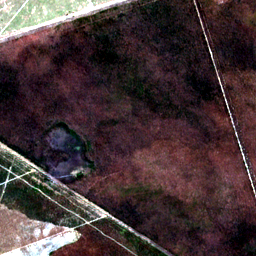
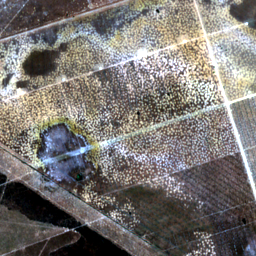
586 ha
12.0421° N, 106.6545° E
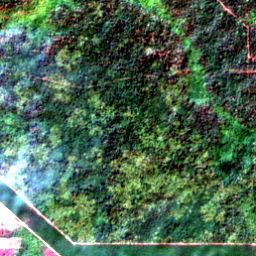
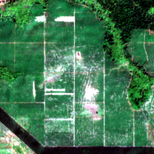
594 ha
13.1631° N, 106.2848° E


1,477 ha
18.2320° N, 90.2694° W


565 ha
19.7182° N, 90.1386° W
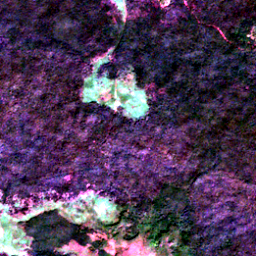
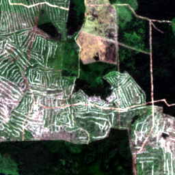
1,439 ha
22.1430° N, 105.4411° W


15,984 ha
55.4551° N, 100.8182° W


10,927 ha
61.7323° N, 108.5615° W


7,384 ha
59.5495° N, 105.1579° W


6,212 ha
50.6280° N, 80.8250° E


4,122 ha
57.3349° N, 115.7257° W


3,073 ha
61.6809° N, 135.0515° E


3,021 ha
61.7579° N, 116.3645° E


2,708 ha
61.7673° N, 108.2301° E
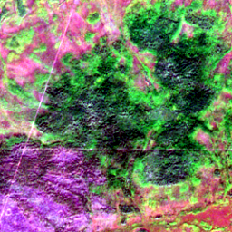
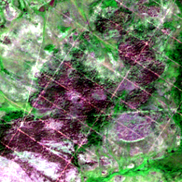
1,934 ha
53.3865° N, 77.1587° W


1,928 ha
50.5614° N, 80.9085° E


1,707 ha
59.5748° N, 120.5643° W


1,425 ha
48.9626° N, 38.1552° E


1,367 ha
48.9807° N, 38.2085° E


1,005 ha
54.5549° N, 123.4403° W


992 ha
55.6806° N, 112.2254° W


981 ha
58.6515° N, 121.4960° W


940 ha
59.1137° N, 118.8819° W


893 ha
61.0807° N, 135.0617° E


886 ha
55.7196° N, 110.9136° W


830 ha
59.3255° N, 110.7569° W


826 ha
62.8911° N, 115.6981° W


825 ha
59.4368° N, 105.2773° W


815 ha
61.1394° N, 121.1155° E


732 ha
51.4903° N, 79.3228° E


722 ha
62.4885° N, 114.8959° W


719 ha
58.7146° N, 117.6870° W


645 ha
53.9444° N, 105.0985° W


614 ha
58.7130° N, 93.0944° E


589 ha
57.9603° N, 87.3079° E


574 ha
62.5284° N, 47.4124° E


574 ha
53.0925° N, 115.9517° W


572 ha
62.7481° N, 115.8306° W


568 ha
61.4308° N, 65.0358° E


559 ha
49.2497° N, 37.0731° E


552 ha
59.6440° N, 123.2039° W


528 ha
55.2248° N, 120.3836° W


521 ha
59.0775° N, 89.6776° E


506 ha
57.8563° N, 86.4600° E
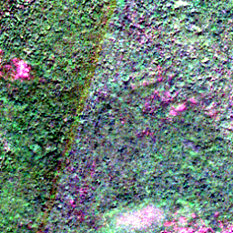
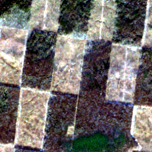